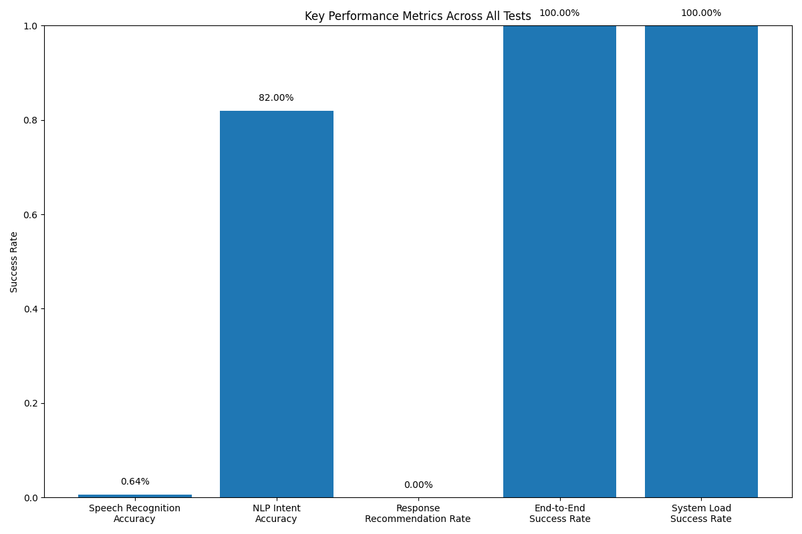
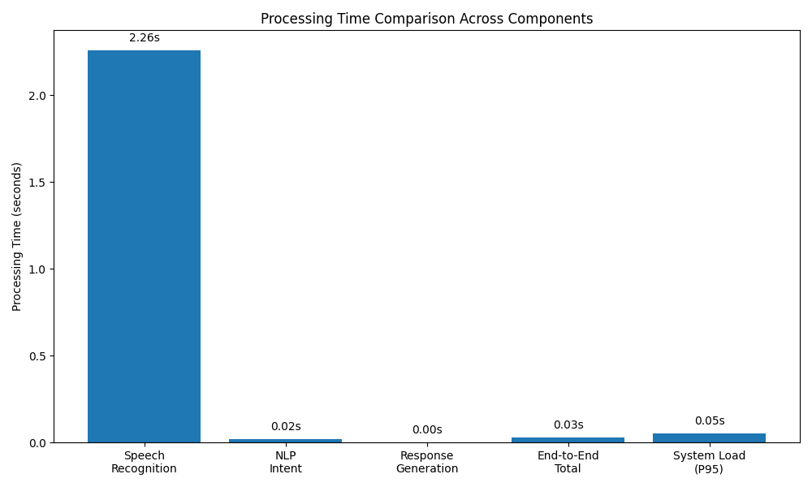

Indonesian Fashion Chatbot - Comprehensive Test Report
Generated on: 2025-05-14 21:06:41
Executive Summary
Overall System Performance
End-to-End Success Rate: 100.00%
Average Processing Time: 0.03 seconds
System Throughput: 47.67 queries/second
Component Performance
Speech Recognition (Azure)
Recognition Accuracy: 0.64%
Average Word Error Rate: 0.3235
Average Processing Time: 2.26 seconds
NLP Intent Classification (IndoBERT)
Classification Accuracy: 82.00%
Average Processing Time: 0.02 seconds
Response Generation
Recommendation Rate: 0.00%
JSON Validity Rate: 100.00%
Average Processing Time: 0.00 seconds
System Load Performance
Success Rate Under Load: 100.00%
95th Percentile Processing Time: 0.05 seconds
Maximum CPU Usage: 11.10%
Maximum Memory Usage: 946.91 MB
Visualizations
Key Performance Metrics

Processing Times Comparison

Recommendations
- Speech Recognition: Improve handling of accents and background noise
- NLP Intent Classification: Consider model retraining or fine-tuning to improve accuracy
- Response Generation: Enhance recommendation quality and consistency
- System Performance: Current system resources appear adequate